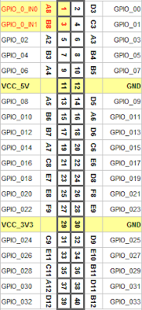
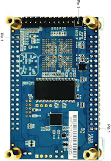
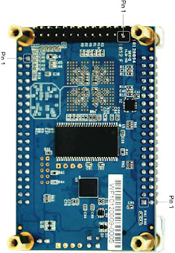
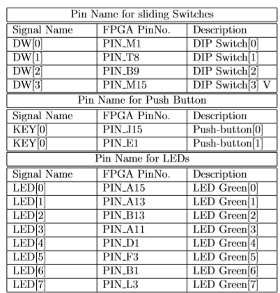
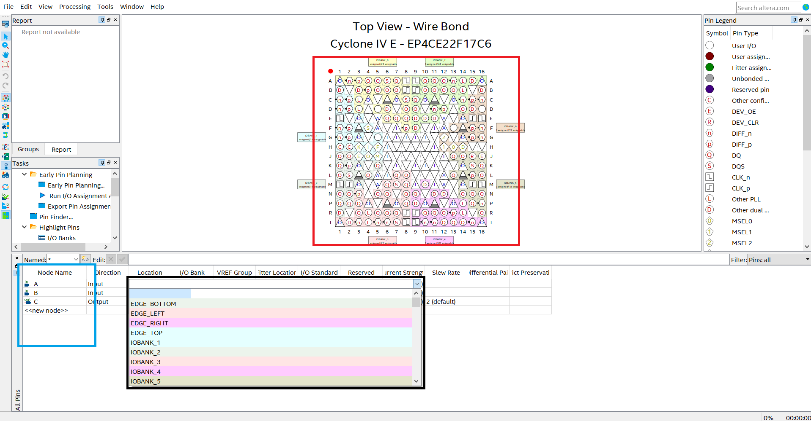
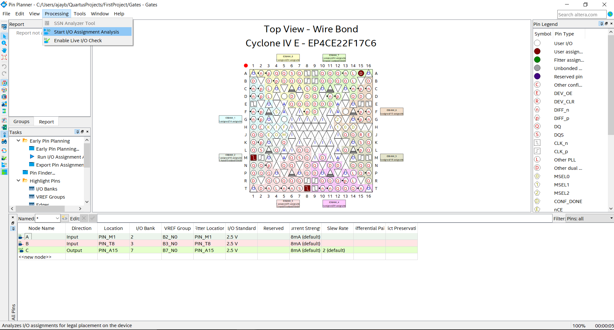
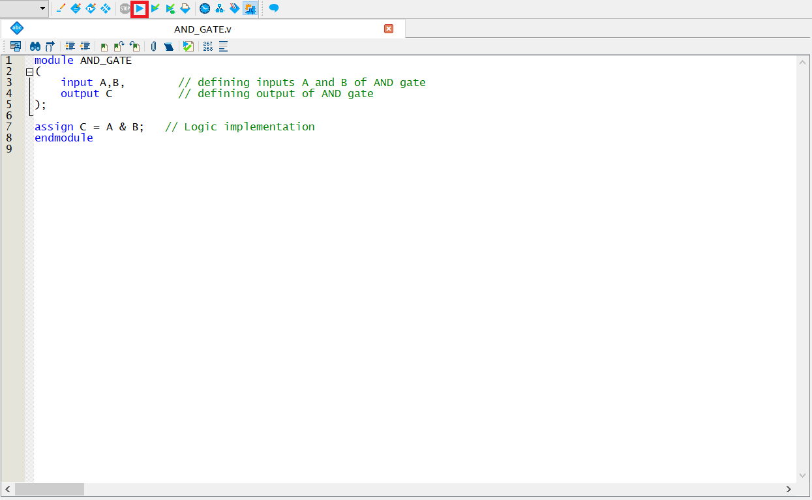
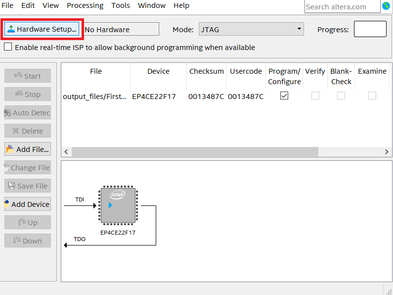
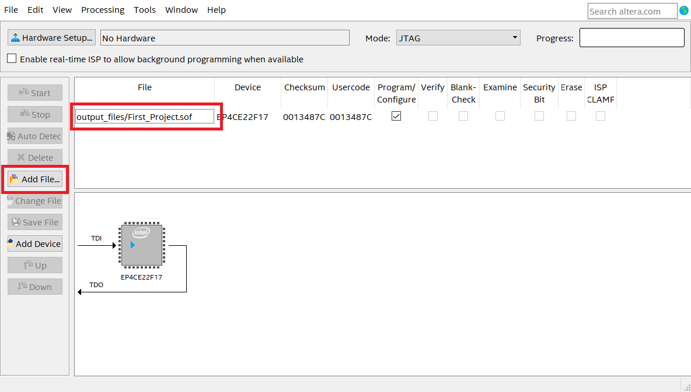

3. Pin Assignment and Loading the design on FPGA board
1. Pin Description
Before starting with the pin assignment let’s first look at how many I/O pins are provided with DE0-Nano packages. Generally FPGAs tend to have lots of pins and we can divide them into two bins: ”General User Pins” and ”Dedicated Pins”.
DE0-Nano package contains the following General user I/O pins:
- 8 green LEDs
- 2 debounced pushbuttons
- 4-position DIP switch Dedicated pins includes
- Two 40-pin Headers (GPIOs) provide 72 I/O pins, 5V power pins, two 3.3V power pins and four ground pins.
- 2x13 header, A/D converter



 


You can assign input and output (I/O) signals to package pins in your design with the help of above table. Using the Pin Planner, you can assign I/O locations, prohibit I/O locations. This process operates on the top entity in your design. This allows you to assign input and output signals to package pins before the underlying logic in the design has been developed. Further in this section we will map the I/O pins created in our design with the actual pins of the DE0-Nano. Before starting pin assignment make sure to do Analysis Elaboration check.
2. Pin Assignment
Click on Assignments → Pin Planner, which opens the Pin Planner, the Pin Planner shows the I/O that we have created in our design.
Now assign the pins by either dragging and dropping the nodes(Blue box) on the required pins(Red box), or click on the drop down menu(Black box) to search and select a pin. We will select LED[0] as the output of the AND gate and switch 0 and 1 for input signal A and B.
- Make sure to select the appropriate I/O standard by referring to the board manual or go with the default setting.
Once all the pins are assigned, Go to Processing→Start I/O Assignment Analysis. The analysis checks pin assignments and surrounding logic for illegal assignments and violations of board layout rules.


Else you can simply type the pin number in location field next to the corresponding I/O node. For eg: To select LED[0] as output, type it's pin number i.e. PIN_A15(refer table above) as shown in the image below.


3. Downloading the code to DE0 Nano FPGA Board
Before starting, Make sure the board is powered ON and connected to the computer through an USB Cable.
Compile the Project by Clicking on Start Compilation. This creates an SRAM object file(.sof file). This file is used to program the Device.
Open the programmer by going to Tools→Programmer.
-
Click on Hardware Setup. The Device required must be listed under ”Currently available hardware”. If not, check if the device drivers are correctly installed. Refer to this link for USB Blaster Installation Instructions. Choose the hardware from the dropdown menu.
If the file is not listed, it can be manually added by clicking on Add File. The .sof file can be found the output directory inside the project directory.
Make sure the Program/Configure checkbox is ticked.
Click on Start to start the programming process. Start button will be enabled when the ’DEO NANO’ board is connected to USB port of your device.
-
The .sof file is volatile i.e. the code will run as long as the board is powered on. Once power to the board is turned off then the code will be erased. So, to permanently upload the code to the DE0-Nano board we generate .jic file and upload this to the board using same steps. Refer video below to understand how to generate and upload .jic file.






Note : The code uploaded using .jic file will start executing only after the DE0-Nano board is turned off and back on. Now even if the power is turned off, code is retained and DE0-Nano executes it as soon as power is turned on.